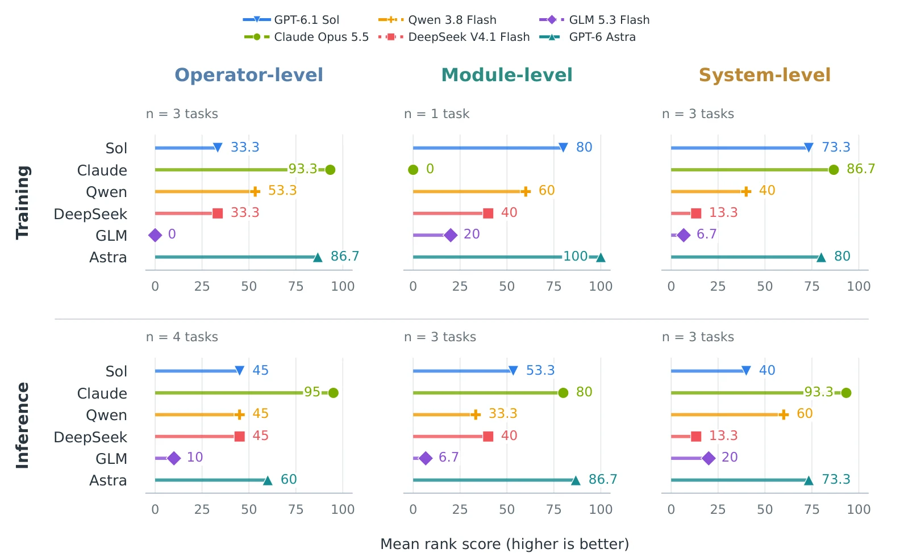
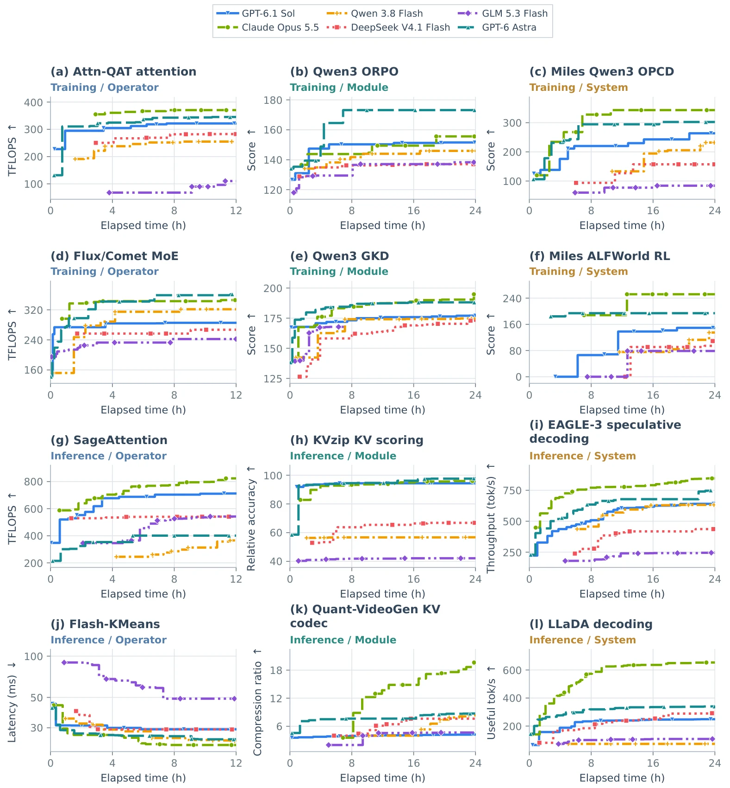
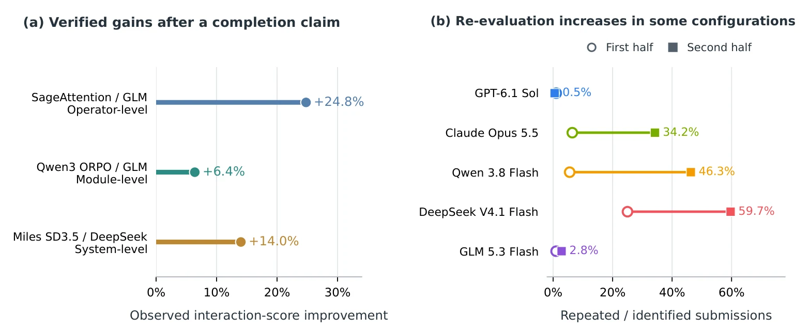

Benchmark25 tasks6 model configurations12–24 h per runH100
Can frontier models solve long-horizon AI infrastructure tasks?
Infrathon gives coding agents 12 to 24 hours on real H100 systems to speed up the software that trains and serves models: GPU kernels, training objectives, KV-cache policies, RL training loops and serving engines. A private judge checks every submission for correctness before it gets a score.
scored submissionrejected or failed checksinfrastructure failureShaded area: best valid score so far, scaled within the task. Move across the trace to scrub time.
25
tasks · 10 training, 15 inference
6
model configurations
149
runs in the October 23 cohort
2,958
submissions sent to the judge
12–24 h
wall-clock budget per run
Why infrastructureone measurable step of the self-improvement loop
Models improving the stack that builds models
Faster kernels, cheaper training steps and smarter serving schedulers are how compute turns into better models. If agents can do this engineering reliably, each model generation can speed up the training and serving of the next. That is the loop behind recursive self-improvement.
Infrathon measures one step of that loop under realistic conditions. The agent gets a working system or an empty file, a fixed wall-clock budget, the profiling tools an engineer would use, and a submission channel to a judge it cannot inspect. It has to make the system faster without changing what it computes.
Where things stand
Not reliably yet. The strongest configurations win most tasks, yet each of the top three finishes last on at least one task, and 15 runs end with a final artifact more than 10% below the best score they reached during the run.
Leaderboard17 ranked tasks · K = 6 configurations
Ranked by task, not by averaging units
Scores come in TFLOPS, tokens per second, compression ratios and accuracy points per training hour, so they cannot be averaged. We rank the six configurations on each task and average the ranks. The ranking uses the 17 tasks where all six have a comparable final evaluation.
Tasks
Endpoint
Rank-score leaderboard
#
Configuration
Rank score · bootstrap 95% interval
Finishing position
123456
Wins
Mean rel.
P(#1)
How the rank score works
On each task τ, configuration m gets rank ρτ,m by final score (1 = best; exact ties share the average rank). For a group G of tasks:
100 means first on every task and 0 means last on every task. Tasks count equally. Because only the ordering matters, the score does not change if a task's metric is rescaled, so tasks scored in milliseconds and tasks scored in tokens per second can share one table.
The score ignores how big the gaps are. Mean relative score (final ÷ best final on the task) gives that view, and every task page shows the raw numbers.
Stage × optimization level
Six categories, one panel each. Hover a row for the per-task ranks behind it.

Figure 3 from the paper. Rank-based leaderboard across application stages and optimization levels, computed from final-artifact evaluations with the same 0–100 scale. The paper uses its own colours for the six configurations.
Stability10,000 bootstrap resamples of the 17 ranked tasks
How much can the ranking move?
A leaderboard over 17 tasks is a small sample. We resample the task set with replacement, recompute the rank scores, and count where each configuration lands. We also check what changes when single tasks are dropped and when runs are judged by their best in-run score instead of their final artifact.
Probability of each leaderboard position
Share of resamples in which the configuration finishes 1st through 6th. Ties share a position.
Final artifact versus best score during the run
Runs whose final evaluation is more than 10% below the best valid score they reached while working. The bar is the final score as a share of that best.
Tasks10 training · 15 inference11 operator · 5 module · 9 system
25 tasks across the AI infrastructure stack
Tasks are grouped by stage and by how much of the system the agent may edit. Operators are single kernels with a 12-hour budget. Modules are components inside a fixed workflow, such as a training loss or a KV policy. Systems are whole training or serving loops. Modules and systems get 24 hours. The bars on each tile show the six final scores relative to the best one.
Trajectoriesbest valid score so far, per submission
What 24 hours of optimization looks like
Each curve starts at the run's first valid scored submission and steps up whenever a later submission beats it. It ends where the run ended. Long budgets produce both late breakthroughs and long plateaus. Pick a configuration to isolate it; click a panel for the full task page.

Figure 4 from the paper. Best-so-far interaction performance on 12 selected tasks, two per stage and level. Flash-KMeans is shown as latency there and as equivalent throughput on this site.
Late gainsOn Flash-KMeans, Claude's best equivalent throughput climbs from 107 to 209 TFLOP/s over the 12-hour run.
Slow start, then progressOn Quant-VideoGen, Qwen's first valid score arrives at 10.2 h. It then reaches 8.34× compression.
Early plateauOn KVzip, Sol reaches 94.39 at 5.8 h. None of its next 29 submissions beats it.
System-level climbOn Miles OPCD, Claude's score rises from 119.7 to 343.0 accuracy points per training hour.
Efficiency152 runs · per-model medians across 25 tasks
Time, turns and tokens to the first valid score
How long does an agent work before the judge accepts and scores something? We count wall-clock hours, tool calls and tokens up to the first valid scored submission, and the total tokens a run consumes over its whole budget.
How these numbers were measured
Findingsaudited code changes, tool calls and judge feedback
Where long-horizon agents break down
Final scores hide how the agents got there. We read archived code changes, tool executions and evaluation feedback and asked four questions. Each has a measured answer.
Do agents keep searching?
5.8% → 28.1%Share of submissions that repeat an earlier candidate's exact contents, first half versus second half of the budget (96 complete-budget runs).
Agents declare completion early. After the stop hook blocks it, GLM gains +24.8% on SageAttention and +6.4% on ORPO, and DeepSeek gains +14.0% on SD3.5.
Qwen's repeats on grouped FP8 GEMM go from 0 of 2 in the first half to 26 of 30 in the second.
Useful search reaches beyond kernels: copy-engine staging on LMCache, and a Ray serialization fix on SD3.5 (146.58 → 8.45 ms).
Can they manage their own experiments?
14 cases · 11 tasksDocumented failures where the agent corrupted its own evidence: wrong state records, faulty diagnostics, interfering processes, incomplete edits.
GLM credits a deeper tile change to Wgrad v022. Its contents are identical to v011.
Qwen's Mamba-2 sweep reuses a cached plan, so every "new" configuration runs the same kernel.
Claude leaves an OPCD profiling service holding GPU memory; the next training run fails to allocate an NCCL buffer.
Do optimizations keep the semantics?
9 driver stalls · 154 runsNode-wide GPU faults in a historical audit. None came from GPT (35 runs) or Claude (22 runs).
GLM's OPD trainer runs with zero loss and zero gradients while reporting normal steps.
Sol's SD3.5 candidate passes forward checks but has gradient cosine 0.581; after repair it reaches 0.990.
Batching breaks sample identity: shuffled ALFWorld games get the wrong advantages.
Do they take shortcuts?
Rejected before scoringThe integrity review blocks submissions that skip required work and returns the rule instead of a score.
Qwen notes that old KV state mixed with new OPD weights is inconsistent, then submits exactly that.
DeepSeek signals completion on Wan2.2 before the log is fsynced.
Historical KVzip runs downloaded and quantized official gating weights instead of writing a scorer; two results were invalidated.

Figure 5 from the paper. (a) Score gains after the stop hook blocks a completion claim. (b) Content-identical repeat submissions as a share of identifiable submissions, first half versus second half, pooled per configuration. The behaviour audit covers the original five model families.
Methodτ = (W, P, E, R, T)
How a run works
Every task uses the same five-part specification. The agent works in its own container; a trusted controller enforces the deadline and reviews each submission; a separate judge runs hidden tests and scores the candidate. Nothing the agent can see contains private test data or scoring code.
WWorkspace: starting code or an interface to implement, and the files the agent may edit.
PPublic tests: visible cases and a local runner for correctness checks and profiling.
EPrivate protocol: hidden test assets, task checks, the scoring objective and allowed feedback.
RResources: GPU allocation and software runtime, per task.
TBudget: 12 h for operators, 24 h for modules and systems, including tool runs and judge waits.
Scores reflect each task's own objective: compute throughput for kernels, bandwidth for KV transfer, fidelity or retained accuracy for KV policies, quality gained per training hour for RL and distillation systems, and throughput for serving. A candidate that fails a correctness, quality or memory check scores by the task's rule, often zero. Missing results are never counted as zero.